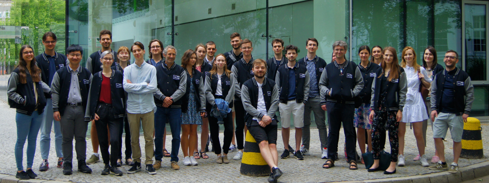

Team

Members
- Przemysław Biecek, PhD (Team Leader)
- Hubert Baniecki, MSc student
- Piotr Czarnecki , PhD student
- Stanisław Giziński, BSc student
- Alicja Gosiewska, PhD student
- Weronika Hryniewska, PhD student
- Katarzyna Kobylińska, PhD student
- Anna Kozak, MSc
- Wojciech Kretowicz, MSc Student
- Michał Kuźba, MSc
- Stanisław Łaniewski, PhD student
- Szymon Maksymiuk, Msc Student
- Katarzyna Pękala, MSc
- Piotr Piątyszek, BSc student
- Barbara Rychalska, PhD student
- Tomasz Stanisławek, PhD student
- Paulina Tomaszewska, PhD student
- Jakub Wiśniewski, BSc student
- Katarzyna Woźnica, PhD student
- Anna Wróblewska, PhD
- Hanna Zdulska, BSc student
Collaborators
- Przemysław Bombiński, PhD, MD
- Marcin Luckner, PhD
- Bartek Pieliński, PhD
- Hanna Piotrowska, MSc
- Elżbieta Sienkiewicz, PhD
- Julian Sienkiewicz, PhD
- Michał Sokólski, MSc student
- Patryk Szatkowski, PhD student, MD
Trainees
- Adrianna Grudzień, BSc student
- Mateusz Grzyb, BSc student
- Hoang Thien Ly, BSc student
- Maria Kałuska, BSc student
- Mateusz Krzyziński, BSc student
- Hubert Ruczyński , BSc student
- Bartosz Sawicki, BSc student
- Szymon Szmajdziński, BSc student
- Zuzanna Trafas, BSc student
- Kinga Ułasik, BSc student
- Artur Żółkowski, BSc student
Alumni
- Marcin Kosiński, MSc
- Adam Rydelek, BSc
Przemysław Biecek

Associate professor at Warsaw University of Technology and the University of Warsaw. Interested in model visualisation, explanatory model analysis, predictive modelling and data science for healthcare. Graduated in software engineering and mathematical statistics. In 2016, he formed the research group MI² which develops methods and tools for predictive model analysis.
Research visits: University of California, Davis (2018, USA), Nanyang Technological University (2018, Singapore), Auckland University (2014, 2015, New Zeland), Hasselt University (2010, 2011, 2017, Belgium), Toronto University (2007, Canada), OECD (2013, France), Vienna University (2004, 2005, Austria), Purdue University (2004, USA).
Google Scholar: Af0O75cAAAAJ. GitHub: pbiecek. LinkedIn: pbiecek.
Hubert Baniecki

Obtained a Bachelor’s degree in Data Science and works towards a corresponding Master’s degree at Warsaw University of Technology. Researching machine learning in the context of explainability, adversarial attacks and interactive model analysis.
Google Scholar: H72DRC0AAAAJ. GitHub: hbaniecki. LinkedIn: hbaniecki.
Alicja Gosiewska

PhD student in Computer Science at Warsaw University of Technology, holds a Master’s degree in Mathematics. Interested in Machine Learning benchmarks and eXplainable Artificial Intelligence for tabular data. Google Scholar: YiwwR6EAAAAJ. GitHub: agosiewska. LinkedIn: alicja-gosiewska
Anna Kozak
Graduated in mathematical statistics at the Warsaw University of Technology. Interested in explainable artificial intelligence and data visualization. Organizes projects related to education.
Google Scholar: JIrqf9kAAAAJ. GitHub: kozaka93. LinkedIn: kozakanna.
Jakub Wiśniewski

Research Software Engineer and third year Data Science student at Warsaw University of Technology. Developer of tools for bias detection and fairness. Currently researching responsible applications of deep learning. President of Data Science Science Club at WUT.
Google Scholar: _6eQsXMAAAAJ. GitHub: jakwisn. LinkedIn: jakwisn.
Katarzyna Woźnica
PhD candidate in computer science at Warsaw University of Technology. Graduated in mathematical statistics. Interested in automated machine learning, statistical analysis and predictive modelling for healthcare.
Google Scholar: tAQS1gQAAAAJ. GitHub: woznicak. LinkedIn: woznicak.
Hoang Thien Ly
Pursuing B.S Degree in Mathematics and Data Analysis at Warsaw University of Technology. Interested in working with data, and learning Machine Learning methods.
Bartosz Sawicki

Works towards BSc degree in Data Science at Warsaw University of Technology. Interested in data visualization.
GitHub: SawickiBartosz.
Hubert Ruczyński

Works towards Bachelor’s degree in Data Science at Warsaw University of Technology. Interested in Maching Learning, Neural Networks and Fairness.
GitHub: HubertR21.
Zuzanna Trafas

A third-year Computer Science student at Poznan University of Technology. Interested in explainable artificial intelligence and computer vision.
GitHub: Zuzanna-Trafas. LinkedIn: zuzanna-trafas